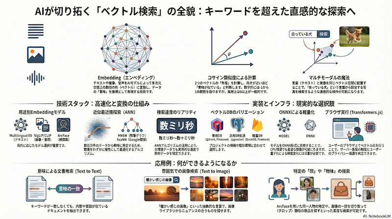

AIが変える「検索」の未来：ベクトル検索の世界へようこそ
前回の記事ではベクトル検索の基本構成を整理しました。本稿では、言語と画像が同じ空間で検索できるマルチモーダルの話題、近似近傍探索やベクトルDBの選択肢、さらにレガシー環境での工夫やインフラの現実的な論点まで、少し広い視点でまとめます。
これまで、私たちは「検索」＝「キーワードを入れること」だと考えてきました。しかし、AI技術の進化により、その常識が大きく変わろうとしています。
言葉にしづらい「雰囲気」や「ニュアンス」で画像を探したり、画像そのものを使って似たものを探したりする。そんな直感的な検索を実現するのが 「ベクトル検索」 という技術です。
一見すると「謎技術」のように思えるこの仕組みですが、その裏側にはAIの進化による確かな論理が存在します。この記事では、ベクトル検索の基礎概念から、具体的な実装技術、そしてアプリケーションへの応用例まで、その全貌を解説します。
1. ベクトル検索の基礎概念：世界は数字でできている
すべてのデータを座標にする「Embedding」
まず、ベクトル検索を理解するための核心となるのが Embedding（エンベディング） という技術です。
これは、自然言語（テキスト）、画像、音声といったあらゆるデータを、「数字の列（ベクトル）」に変換する処理のことです。AIのモデルは、大量のデータを学習することで、データが持つ「意味」を抽出し、それを多次元空間上の座標（ベクトル）として表現します。
「似ている」をどうやって測る？
AIが生成するベクトルは、768次元や512次元といった人間には想像もつかない多次元空間に存在します。これを分かりやすく2次元の地図に例えてみましょう。
この地図上では、 意味が似ているもの同士は近くに配置 されます。例えば、「猫」と「キャットフード」は近くに、「猫」と「自動車」は遠くに配置されるイメージです。
では、どうやって「似ている」を計算するのでしょうか？複数の計算方法がありますが、ここでは最も代表的な コサイン類似度（Cosine Similarity） で説明します。
これは、原点から見た2つのベクトルの「角度」を見る方法です。角度が小さい（方向が近い）ほど類似度が高く、逆を向いていれば類似度が低いと判断します。数学的には-1（正反対）から1（完全一致）の範囲を取りますが、ベクトル検索で使われるEmbeddingでは、意味的に「反対」の概念が明確でないため、実際の類似度はほぼ0以上に収まります。この計算により、膨大なデータの中から瞬時に「意味が近いもの」を見つけ出すことができるのです。
言葉と画像が同じ空間に同居する魔法
ここが現代のAIの最もすごい点です。技術の進歩により、 自然言語と画像を同じベクトル空間にマッピング できるようになりました。
これにより、「楽しそうな犬」というテキストのベクトルと、「走っている犬の写真」のベクトルが、空間上の同じような場所に配置されます。つまり、キーワードの一致ではなく、ベクトルの近似計算だけで、言葉から画像を探したり、その逆が可能になるのです。
2. 技術的な実現方法：どうやって動かすのか
概念が分かったところで、具体的な技術スタックを見ていきましょう。
「変換器」としてのEmbeddingモデル
データをベクトル化するためのAIモデルには、様々な種類があります。
- 自然言語用: テキストの意味理解に特化したモデル。 Multilingual E5やLaBSEなど、多言語対応のモデルが主流です。
- マルチモーダル（言語+画像）: Googleの SigLIP や OpenAIの CLIP など、テキストと画像を同じ空間で扱えるモデル。
- 顔認識特化: 顔の特徴を捉えることに特化したモデル。InsightFaceなどのツールセットに含まれる ArcFace モデル。
高速に探すための技術：近似最近傍探索（ANN）
すべてのベクトルに対してコサイン類似度を計算する線形探索（全探索）では、データ量が増えると時間がかかりすぎます。
そこで、精度をほんの少しだけ犠牲にして、劇的に高速に検索する 近似最近傍探索（Approximate Nearest Neighbor: ANN） というアルゴリズムが使われます。
- HNSW（Hierarchical Navigable Small World）: 階層的なグラフ構造により高速検索を実現。数百万件規模のデータでもミリ秒単位で検索可能。メモリ使用量は大きいが、現在最も広く使われている。
- ScaNN（Scalable Nearest Neighbors）: Googleが開発したアルゴリズム。量子化とグラフ構造を組み合わせ、メモリ効率と速度のバランスに優れる。
これらのアルゴリズムにより、数百万〜数億というデータの中からでも、実用的な速度（数ミリ〜数十ミリ秒）で類似ベクトルを探し出すことが可能になります。（データ量が数千件程度であれば、NumPyやSciPyを使ってメモリ上で線形探索することも十分現実的です）
※用語としての「kNN（k近傍法）」には2つの文脈があります。1つは線形探索で厳密に近傍を求める「厳密なkNN」、もう1つは実務で「kNN検索」と呼ばれがちな近似近傍探索（ANN）です。本稿では後者を明確に「ANN」として扱い、HNSWやScaNNをその代表手法として紹介しています。
ベクトルをどこに保存するか？（データベースの選択肢）
ベクトルデータを保存・検索するためのデータベース（ベクトルDB）も進化しています。
- 専用DB: Qdrant, Pinecone など、ベクトル検索のために設計された高速なDB。
- 汎用DBのアドオン: PostgreSQL (pgvector) や Elasticsearch など、既存の強力なDBにベクトル検索機能を追加したもの。
- ローカル/軽量DB: DuckDB (HNSWアドオンあり) や Firestore (ScaNN対応) など、手軽に利用できる環境。
【挑戦】レガシー環境（Zope）での実装事例
モダンなベクトルDBが使えない環境ではどうすれば良いでしょうか？例えば、ZopeのようなレガシーなオブジェクトDBには、標準でHNSWのようなアルゴリズムは搭載されていません。
データ数が少なければ、カタログMetadataから全ベクトルを取得してNumPyで計算することも可能ですが、データが増えるとスケールしません。
そこで私たちは、局所性鋭敏型ハッシュ（Locality-Sensitive Hashing: LSH） の一種であるITQ-LSHとPivot戦略を組み合わせることで、専用のインデックスを持たないDBでも高速に候補を絞り込む仕組みを実装しました。LSHは「近いベクトルほど同じハッシュ値を持ちやすい」という性質を利用し、全件走査を避けつつ近似的に類似データを取得できます。これは、古いシステムに最新の検索技術を組み込むための一つの挑戦的なアプローチです。
3. アプリケーション応用例：何ができるようになるか
ベクトル検索を使うことで、どのようなアプリケーションが実現できるでしょうか。
- 「意味で文書を探す (Text to Text) 従来のキーワード検索では見つけられなかった、意味的に近い文書を探すことができます。例えば、「AIの未来についての記事」を検索すると、キーワードが完全に一致しなくても、内容が似ている記事がヒットします。
- 「雰囲気」で画像を探す (Text to Image) GoogleのSigLIPやOpenAIのCLIP-Lを使えば、「なんとなく暖かい感じの画像」といった抽象的な言葉で検索できます。SigLIPは日本語のニュアンス理解にも優れています。
- 画像から似た画像を探す (Image to Image) 検索クエリとして文字ではなく「画像」を入力し、それをベクトル化して類似画像を検索できます。ECサイトのレコメンドなどで有効です。
- 画像の一部を切り取って探す（オブジェクト検索） JavaScriptで画像の一部をクロップ（切り抜き）し、その部分だけを再検索にかけることで、画像全体ではなく「写っているカバンだけ」を探すといったことが可能になります。
- 「顔」で特定の人を探す（顔認識検索） 「雰囲気」ではなく「同一人物」を探したい場合は、アプローチを変えます。InsightFaceのようなツールキットを使い、画像から顔を検出・切り出し、 ArcFace などの顔認識専用モデルでベクトル化します。1枚の画像から複数の顔ベクトルを抽出・保持することで、高精度な顔検索が実現します。
4. インフラストラクチャの考慮点
これらを実現するためのインフラについても考慮が必要です。
- 計算リソースの壁（GPU vs CPU） 特にEmbedding（ベクトル化）の処理は計算コストが高いです。大量の画像やテキストを処理する場合、実用的にはGPU（VRAM 8GB程度〜）が欲しくなります。CPUでも動作しますが、処理速度は低下します。
- 軽量化の切り札：ONNX CPU環境での実行速度を向上させるために、 ONNX（Open Neural Network eXchange） という中間フォーマットが有効です。PyTorchやTensorFlowのモデルをONNX形式に変換し、ONNX Runtimeで実行することで、CPUでも高速化が期待できます。ただし、モデル変換時の量子化（精度を落として軽量化）により、元のモデルと比べてベクトルの値や精度が変わる可能性があるため、事前検証が必須です。
- エッジでの実行：Transformers.js サーバーにGPUを用意できない場合、 Transformers.js を使ってユーザーのブラウザ上でモデルを動かすアプローチもあります。初回ロード時間（数百MB規模のモデルのダウンロード）やユーザーのマシンスペックに依存しますが、以下のメリットがあります：
- サーバー負荷を劇的に削減
- ユーザーデータがサーバーに送信されないためプライバシー保護
- WebAssemblyやWebGPUによる高速化（対応ブラウザ限定）
おわりに
ベクトル検索は、私たちが情報にアクセスする方法を根本から変える可能性を秘めています。「検索ワードが思いつかないと探せない」時代から、「イメージやニュアンスで直感的に辿り着ける」時代へ。
適切なモデル選び、アルゴリズム、そしてインフラの選択を組み合わせることで、これまでにない新しい検索体験を構築していきましょう。
